Ürün & proje görselleriProducts & projectsProdukte & Projekte
İşlerimizden kareler.Our work in frames.Unsere Arbeit in Bildern.
Fuar standlarından mutfaklara, giyinme odalarından kapılara; kurduğumuz ve monte ettiğimiz işlerden seçkiler. Bir görsele tıklayın, tam ekranda inceleyin.From exhibition stands to kitchens, closets and doors — a selection of what we've built and installed. Click any image to view it full screen.Von Messeständen über Küchen bis zu Ankleiden und Türen – eine Auswahl unserer Arbeiten. Klicken Sie auf ein Bild für die Vollbildansicht.


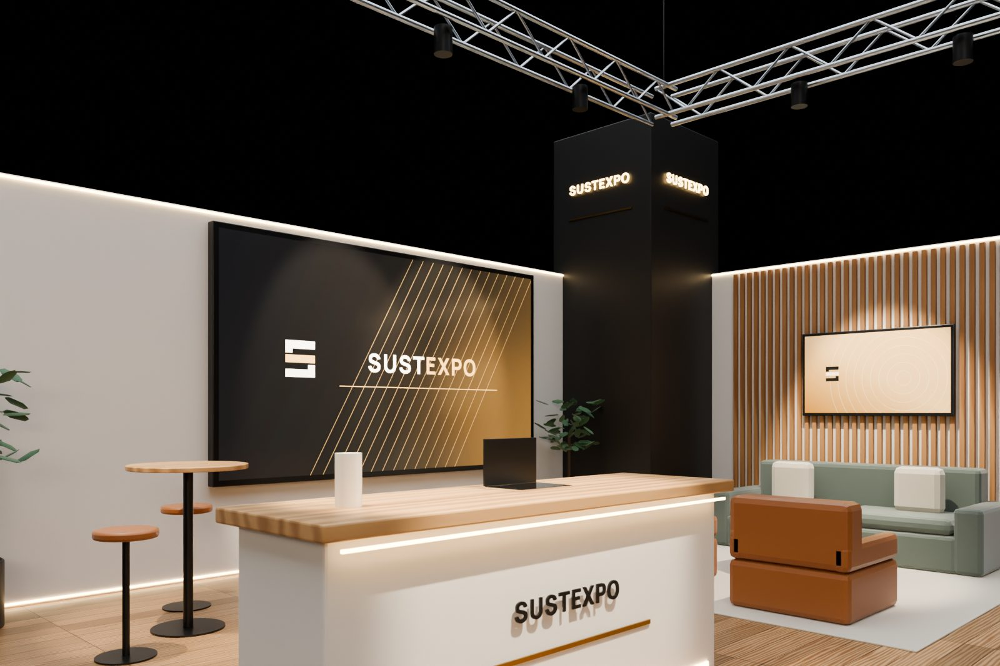
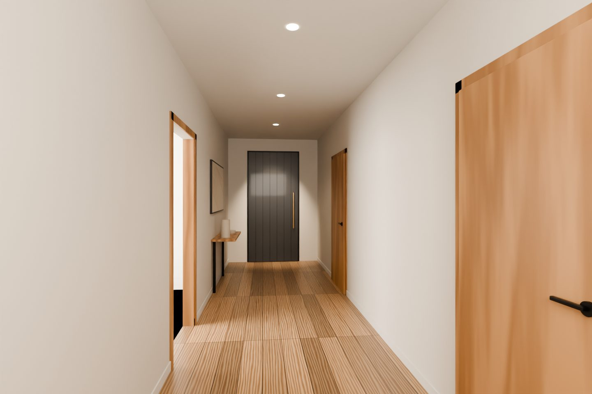
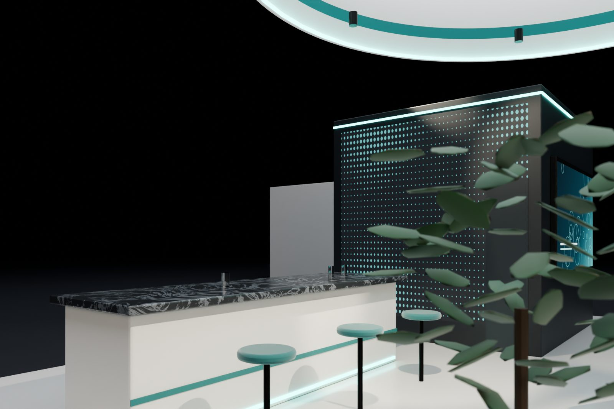
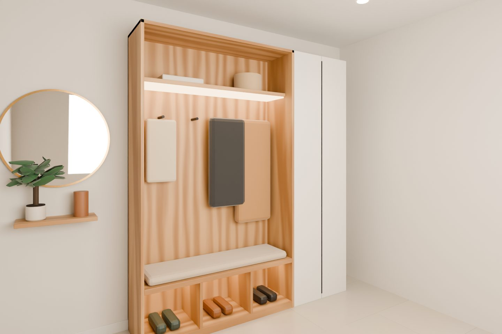

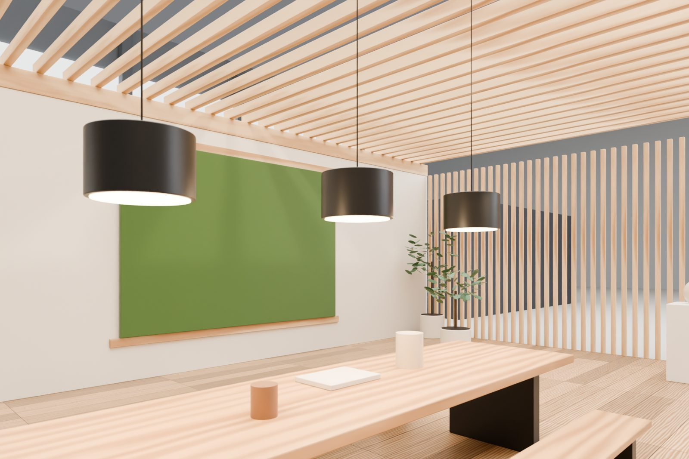
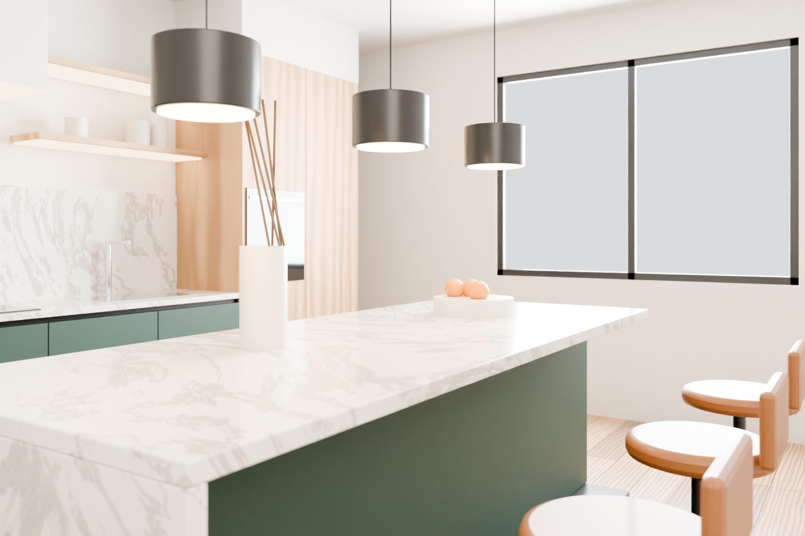
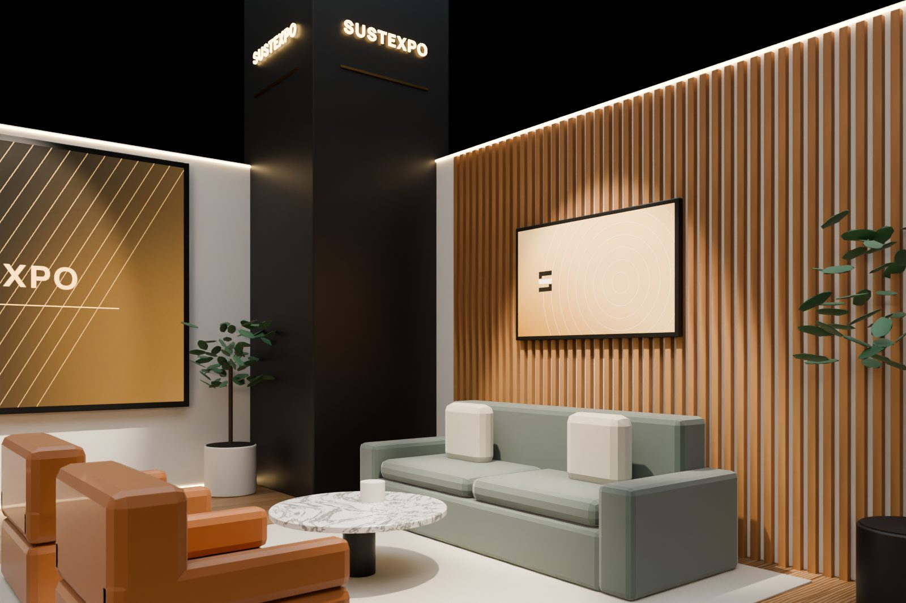
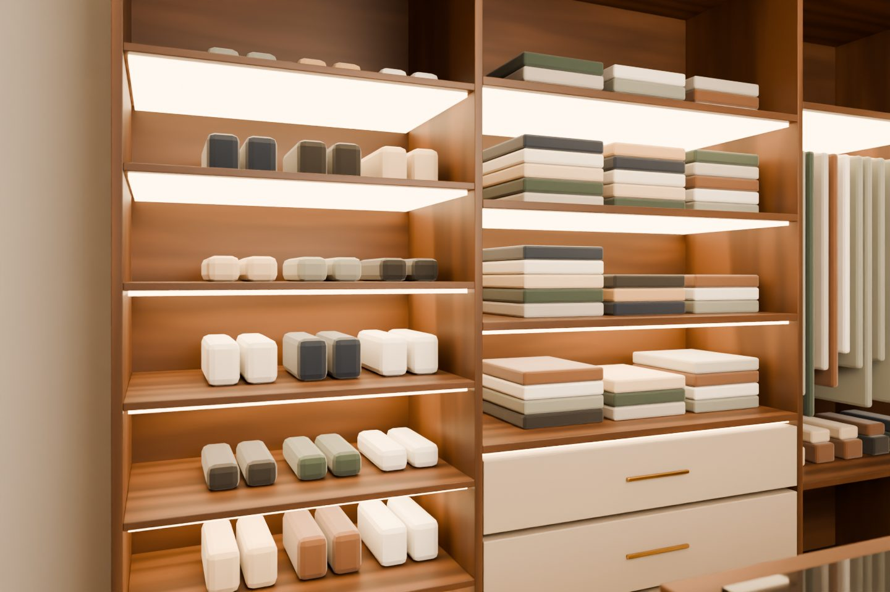
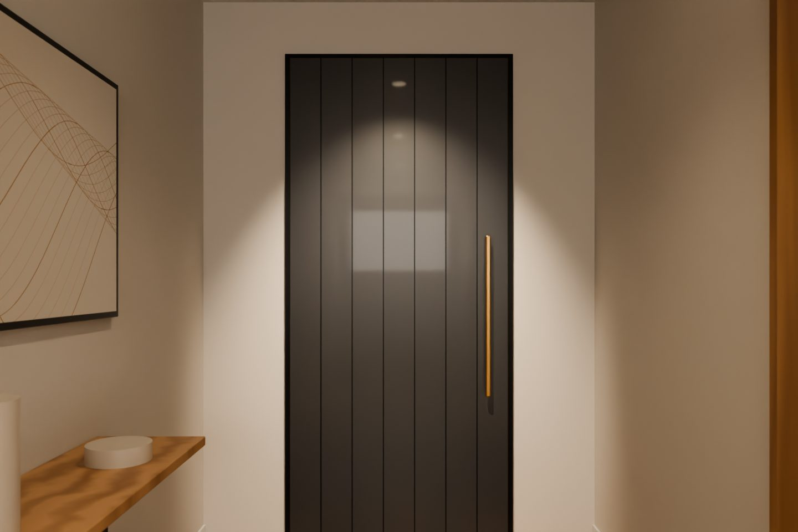
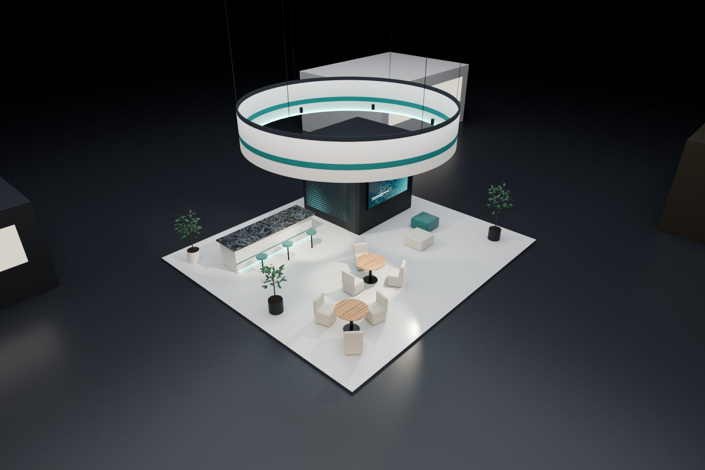
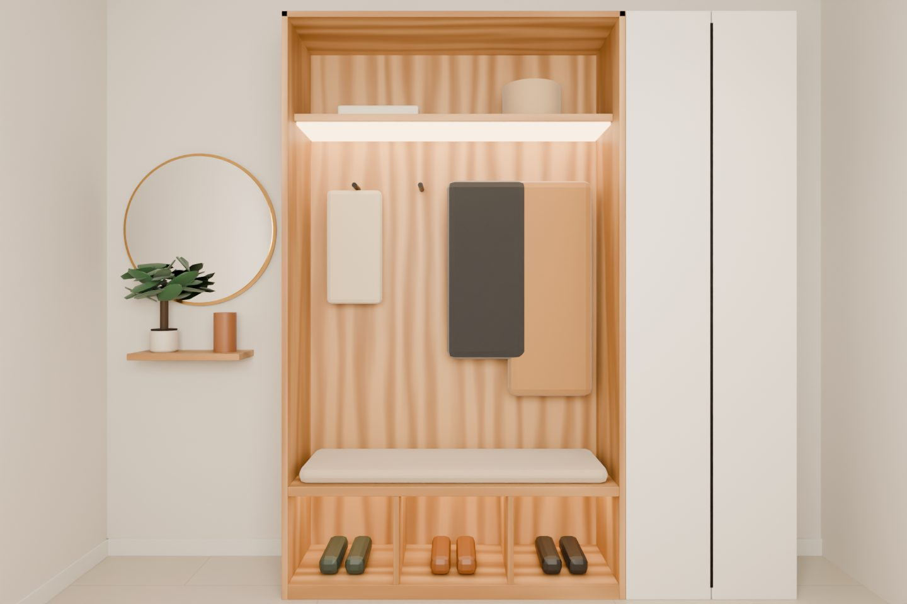
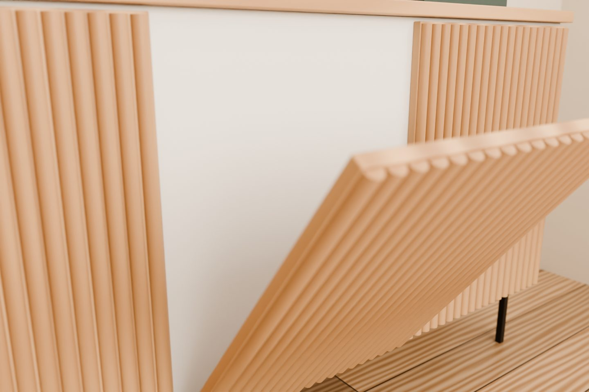
Bu kategoride henüz görsel yok.No images in this category yet.In dieser Kategorie gibt es noch keine Bilder.

Sıradaki projeNext projectNächstes Projekt